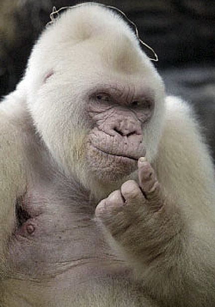

Gorillas
Gorillas are animals from the forests of central Sub-Saharan Africa. They are herbivores and considered the largest primates in the world. They can weight up to 372 pounds, and the largest gorilla ever recorded weighed 589 pounds! They can also stand up to 6 feet tall, with a winspan up to 8.5 feet. As one can imagine, they are extremely strong. They are estimated to be 4x - 10x stronger than the average human. Their bite force of 1300 psi is double that of a lion's. Genetically, they share up to 99% of their DNA with humans, making them the next closest living relatives to humans after chimpanzees and bonobos.
Gallery
